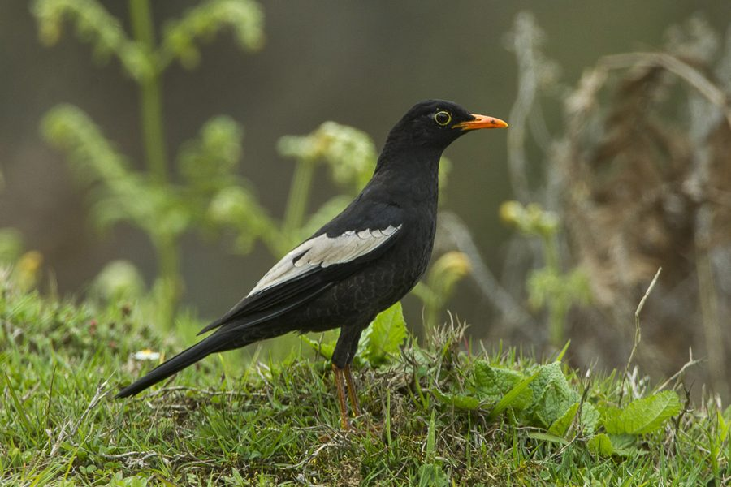

ग्रे-विंग्ड ब्लैकबर्डGrey-winged Blackbird
Turdus boulboul · Turdidae · BRD-0371

- Scientific name वैज्ञानिक नाम
- Turdus boulboul (Latham, 1790)
- Family कुल
- Turdidae
- Hindi हिंदी
- ग्रे-विंग्ड ब्लैकबर्ड
- Local names स्थानीय नाम
- grey-winged blackbird
- Status here यहाँ की स्थिति
- native
- Movement आवागमन
- Winter visitor
- Known from कहाँ दर्ज
- Others have published records from the wider Awadh–Purvanchal plain, none yet from Basti–Ayodhya अवध–पूर्वांचल से दूसरों के प्रकाशित अभिलेख, बस्ती–अयोध्या से अभी नहीं
- IUCN IUCN
- LC
- Review समीक्षा
- not yet reviewed
When to look कब देखें
Winter visitor शीतकालीन प्रवासी. Expected mainly in February, March, April. मुख्यतः फ़रवरी, मार्च, अप्रैल में अपेक्षित।
Sedentary in the Himalayas from Murree to Assam, "even in Winter ... equally seldom found below 3,000 feet" (Baker 1924). GBIF records in the Uttar Pradesh plains fall in February, March, and April. All migrants and visitors →
Tell it apart from इनसे अलग पहचानें
ग्रे-विंग्ड ब्लैकबर्ड / Grey-winged Blackbird
Turdus boulboul (Latham, 1790) — Turdidae
ग्रे-विंग्ड ब्लैकबर्ड — वनों और खुले वन किनारों पर जमीन पर रहने वाली एक शर्मीली कस्तूरी चिड़िया। बेकर (1924) के अनुसार वयस्क नर का शरीर काला होता है, जबकि डैनों पर स्लेटी-धूसर रंग होता है। इसकी चोंच मूंगा-लाल से नारंगी और पलकें नारंगी-पीली होती हैं। मादा जैतून-भूरी होती है। यह जमीन पर रहकर भोजन तलाशती है और सुबह के समय सीटी जैसी आवाज निकालती है।
Quick Identification त्वरित पहचान
| Feature | Description |
|---|---|
| Habit | Forest bird frequenting outskirts and open glades, feeding much on the ground |
| Male Plumage | Black upperparts, wings, and tail; median and greater coverts and secondaries ashy grey (Baker 1924, p. 130) |
| Female Plumage | Dark olive-brown replacing black, with pale rufous wing marks (Baker 1924, p. 131) |
| Bill & Eye-ring | Bill coral-red to deep orange; eyelids orange-yellow (Baker 1924, p. 131) |
| Underparts | Below from chin brownish black, paling towards center of abdomen, feathers narrowly margined with pale silvery grey (Baker 1924, p. 131) |
| Legs & Feet | Brownish yellow legs and feet (Baker 1924, p. 131) |
Field tip: Look for a black thrush hopping quietly in shaded forest undergrowth, showing an ashy-grey wing panel and bright orange-yellow bill (Baker 1924, p. 130).
हिंदी:
नर का काला शरीर, पंखों पर स्लेटी धब्बा और नारंगी चोंच देखकर इसे पहचाना जाता है (बेकर 1924)।
Morphology आकारिकी
Measurements as given by Baker (1924):
| Measurement | Range |
|---|---|
| Biometrics | Total length about 280 mm. ; wing 141 to 147 mm. ; tail 107 to 112 mm. ; tarsus 34 mm. ; culmen 21 to 22 mm. (Baker 1924) |
Stuart Baker (1924, pp. 130–131) described the adult male plumage: "Tips of median wing-coverts, outer webs of greater coverts and inner secondaries and edges of outer secondaries ashy grey ; remainder of upper plumage, wings and tail black ; below from chin brownish black, paling towards the centre of the abdomen and vent and the feathers of these parts narrowly margined with pale silvery grey." Female: "Has the black of the male replaced by olive-brown and the marks on the wing are pale rufous, not contrasting much with the other parts" (Baker 1924, p. 131).
Colours of soft parts: iris brown, the eyelids orange-yellow; bill coral-red to deep orange, blackish at tip; legs and feet brownish yellow (Baker 1924, p. 131).
हिंदी:
बेकर (1924) के अनुसार इसकी कुल लंबाई लगभग 280 मिमी, डैने 141 से 147 मिमी, पूंछ 107 से 112 मिमी, टार्सस 34 मिमी और चोंच 21 से 22 मिमी होती है। आंख की पलकें नारंगी-पीली और पैर भूरे-पीले होते हैं।
Behaviour & Ecology व्यवहार और पारिस्थितिकी
Stuart Baker (1924, p. 132) noted: "This Blackbird is a forest bird, though it frequents the outskirts and open glades rather than the interiors, except during the breeding months. It is very sedentary and does not appear to move much with the seasons, even vertically. It probably seldom wanders much above 9,000 feet and, on the other hand, even in Winter is equally seldom found below 3,000 feet. It is a quiet bird, feeding much on the ground and shunning observation."
Baker (1924, p. 132) observed: "The song is a fine deep series of whistles, much like the early spring song of our English Blackbird but it sings very little except in the early mornings."
हिंदी:
बेकर (1924) के अनुसार यह वनों का शांत पक्षी है जो जमीन पर भोजन तलाशता है। यह बहुत कम प्रवास करता है और सर्दियों में भी 3,000 फीट से नीचे कम ही पाया जाता है।
Life Cycle / Phenology जीवन चक्र
Baker (1924, pp. 131–132) recorded that the species breeds across the Himalayas from Murree eastward: "Breeds throughout its range from the end of April to June but occasionally much earlier... The nest is a large and rather massive cup of moss, roots and grasses with an internal lining of mud... The eggs are rather of the Blackbird's type... scattered fairly equally over the whole surface".
While Baker (1924, p. 132) remarked that it is seldom found below 3,000 feet, published GBIF records from the Uttar Pradesh lowlands fall between February and April during late winter and early spring.
हिंदी:
बेकर (1924) के अनुसार यह हिमालयी क्षेत्रों में अप्रैल से जून के बीच घोंसला बनाकर अंडे देता है। उत्तर प्रदेश के मैदानी भाग में इसके रिकॉर्ड फरवरी से अप्रैल के बीच शीतकाल में दर्ज किए गए हैं।
Host Plants or Prey आहार
No source opened for this atlas lists the food of this bird.
हिंदी:
इस एटलस के लिए खोले गए किसी भी स्रोत में इस पक्षी के भोजन की विशिष्ट सूची नहीं दी गई है (बेकर 1924 केवल जमीन पर भोजन तलाशने का उल्लेख करते हैं)।
Predators / Natural Enemies शत्रु
No source opened for this atlas names a specific predator of this bird.
हिंदी:
इस एटलस के लिए खोले गए किसी भी स्रोत में इस पक्षी के किसी विशिष्ट शिकारी का उल्लेख नहीं है।
Agricultural / Human Relevance कृषि प्रासंगिकता
Inhabiting dense forest tracts and glades, it does not interact with agricultural operations. Protected under the Wildlife (Protection) Act, 1972.
हिंदी:
वनों में रहने के कारण इसका कृषि से कोई प्रत्यक्ष टकराव नहीं है। यह वन्यजीव (संरक्षण) अधिनियम, 1972 के तहत संरक्षित है।
Expected Locally स्थानीय रूप से अपेक्षित
Not a field record. Written from published accounts for eastern Uttar Pradesh. No confirmed local sighting yet — if you have seen it, that is what the atlas needs.
अभी तक स्थानीय पुष्टि नहीं। यह विवरण प्रकाशित स्रोतों से है, किसी अवलोकन से नहीं।
GBIF holds published records from the wider Awadh–Purvanchal plain, none yet from Basti–Ayodhya.
Published occurrences in the region are known from Lucknow (six records), Lakhimpur Kheri (one record), Maharajganj (one record: an authentic University of Michigan specimen collected at Nichlaul in February 1947 by Walter Koelz), and Shravasti (one record), reported by twelve observers between February and April.
A first record would be a photograph with place and date, sent through the About page.
Distribution वितरण
Global range: Baker (1924, p. 131) gave the distribution: "Murree, East to the extreme East and South of Assam and Manipur."
In India: Baker (1924, p. 131) gave the distribution as extending from Murree east to Assam and Manipur.
In Uttar Pradesh: Documented by winter occurrences in the sub-Himalayan Terai districts of Lakhimpur Kheri, Shravasti, and Maharajganj, as well as Lucknow. GBIF holds no published record from Basti or Ayodhya.
In Basti district / eastern UP: GBIF holds no record from Basti or Ayodhya; the nearest are in Shravasti and Maharajganj.
हिंदी:
बेकर (1924) के अनुसार इसका वितरण मुरी से लेकर असम और मणिपुर तक है। उत्तर प्रदेश में इसके रिकॉर्ड लखनऊ, लखीमपुर खीरी, श्रावस्ती और महाराजगंज (निचलौल से 1947 का नमूना) से हैं।
Research Questions शोध प्रश्न
- What factors explain the rare lowland records in the Uttar Pradesh plains given Baker's observation that it is sedentary above 3,000 feet? / बेकर के इस अवलोकन के बाद भी कि यह 3,000 फीट से नीचे बहुत कम आती है, उत्तर प्रदेश के मैदानी इलाकों में इसके दिखने के क्या कारण हैं?
- Does the Grey-winged Blackbird forage alongside wintering Tickell's Thrushes in shaded leaf-litter microhabitats? / क्या यह छायादार नम स्थानों पर टिकेल्स थ्रश के साथ मिलकर भोजन तलाशती है?
- Which native fruiting shrub species in Terai forest understorey are utilized during late-winter stopovers?
- How do calling rates of passage blackbirds vary between dawn and dusk in lowland sal tracts?
- Can rural naturalists recognize the silvery wing panel of the male hopping on damp shaded soil? (A birdwatcher can look for a black thrush with pale grey wings in dense undergrowth.)
Similar Species मिलती-जुलती प्रजातियाँ
| Species | How to tell apart | हिंदी | |
|---|---|---|---|
| [[tickells_thrush | Tickell's Thrush]] (Turdus unicolor) | Pale slate-grey above with no distinct silvery-grey wing panel; whitish abdomen and under tail-coverts; yellow bill (Grimmett et al. 2011) | टिकेल्स थ्रश |
| [[black_throated_thrush | Black-throated Thrush]] (Turdus atrogularis) | Plain greyish-brown upperparts without silvery wing panel; solid black or heavily spotted throat and breast; whitish belly (Grimmett et al. 2011) | ब्लैक-थ्रोटेड थ्रश |
Field rule: The black plumage of the male contrasting with a conspicuous ashy-grey wing panel and orange bill and eye-ring separates the Grey-winged Blackbird from all other regional thrushes (Baker 1924, p. 130).
हिंदी:
टिकेल्स थ्रश ऊपर से धूसर-स्लेटी होती है; ब्लैक-थ्रोटेड थ्रश का सीना काला और डैने सादे होते हैं; ग्रे-विंग्ड ब्लैकबर्ड का शरीर काला और डैनों पर बड़ा स्लेटी धब्बा होता है।
Taxonomy & Classification वर्गीकरण
Original description. Described by John Latham in 1790 in Index Ornithologicus (Vol. 1, p. 330), under the basionym Lanius boulboul, with the type locality given as India (subsequently restricted to Darjeeling).
Subspecies. Monotypic. Baker (1924, p. 130) treated the species under Turdus boulboul, recognizing no geographical races across its Himalayan range.
Family and order placement. Order Passeriformes, family Turdidae (thrushes), genus Turdus.
IUCN status rationale. Evaluated as Least Concern (LC) on the IUCN Red List (BirdLife International 2016).
हिंदी:
लैथम ने 1790 में इसका वर्णन किया था। यह टर्डिडी कुल का सदस्य है और प्रकृति संरक्षण संघ की रेड लिस्ट में संकट-मुक्त (LC) है।
Photo Gallery फोटो गैलरी
No photos yet — add field photos to media/species/grey_winged_blackbird/ and run node scripts/sync_photos.js.
Photos needed आवश्यक फोटो
- [ ] Adult male hopping in leaf litter showing contrasting ashy-grey wing panel (पत्तियों में फुदकता नर जिसमें स्लेटी पंख दिखे)
- [ ] Close-up showing bright orange-yellow bill and eye-ring (नारंगी-पीली चोंच और आंखों के घेरे का स्पष्ट दृश्य)
References संदर्भ
- Latham, J. (1790). Index Ornithologicus, Sive Systema Ornithologiae. Vol. 1. Leigh & Sotheby, Londini, p. 330 (as Lanius boulboul).
- Baker, E. C. S. (1924). The Fauna of British India, Including Ceylon and Burma. Birds. Vol. 2. 2nd ed. Taylor & Francis, London, pp. 130–132 (as Turdus boulboul).
- Ali, S. & Ripley, S. D. (1987). Compact Handbook of the Birds of India and Pakistan. 2nd ed. Oxford University Press, New Delhi.
- Grimmett, R., Inskipp, C. & Inskipp, T. (2011). Birds of the Indian Subcontinent. 2nd ed. Christopher Helm, London.
- Rasmussen, P. C. & Anderton, J. C. (2012). Birds of South Asia: The Ripley Guide. 2nd ed. Smithsonian Institution and Lynx Edicions, Washington, D.C. and Barcelona.
- BirdLife International (2016). Turdus boulboul. The IUCN Red List of Threatened Species 2016: e.T22708772A94175974. doi:10.2305/IUCN.UK.2016-3.RLTS.T22708772A94175974.en
- GBIF Occurrence Data — Turdus boulboul, India (2025).
Source file: species/fauna/birds/grey_winged_blackbird.md